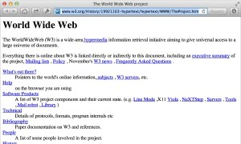
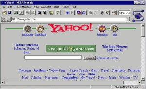
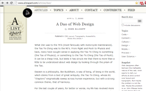

Information management : A proposal

Tim Berner-Lee schrijft zijn voorstel ‘Information management: A proposal’ over het beheren van informatie.
De ontwikkeling van internet
De code voor het World Wide Web werd samen met de standaarden voor HTML, HTTP, en URL’s geschreven door Tim Berners-Lee.
De eerste website
Twee jaar na zijn voorstel maakte Tim Berners-Lee de eerste website ooit.
Eerste grafische browser
De eerste grafische browser voor het publiek: Mosaic werd gepresenteerd.
Het begin van CSS
In 1994 kwam de Noor Håkon Wium Lie met het concept van cascading style sheets. Hij ging hiervoor samenwerken met de Nederlandse informaticus Bert Bos. Dit resulteerde later in de publicatie van de CSS1-aanbeveling, en de introductie van CSS2.
A Dao of Web Design
In het online tijdschrift ‘A List Apart’ werd het artikel ‘A Dao of Web Design’ door John Allsopp gepubliceerd. Dit artikel riep designers op om te beginnen met responsive webdesign.
Mobiel internet
Lancering van de iPhone 2G, de eerste smartphone die kan communiceren met internet.
Responsive Web Design
In het online tijdschrift ‘A List Apart’ werd het artikel ‘Responsive Web Design’ van Ethan Marcotte gepubliceerd. Hierin werd dezelfde boodschap verwoordt als zijn voorganger ‘A Dao of Web Design’, in het begin van het artikel werd hier zelfs naar terugverwezen.